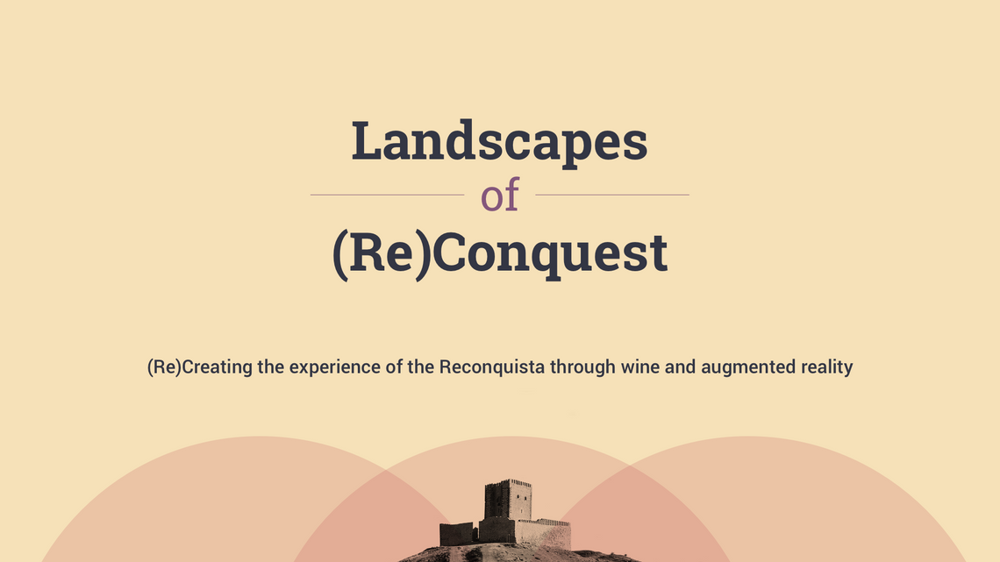
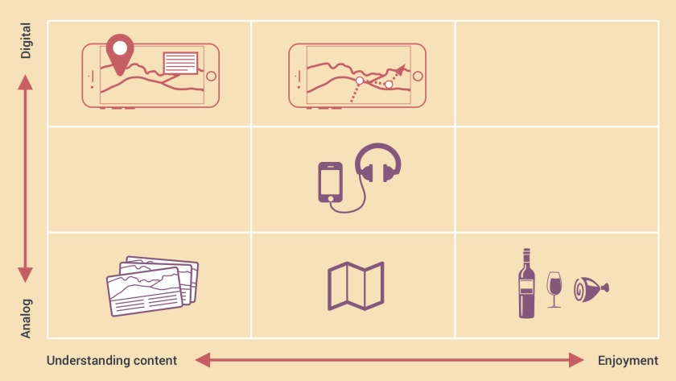
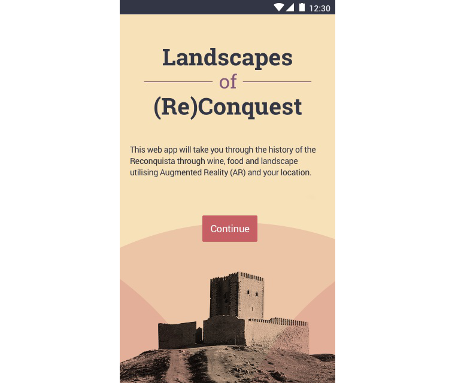
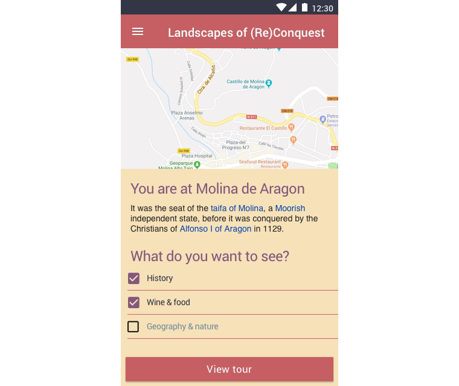
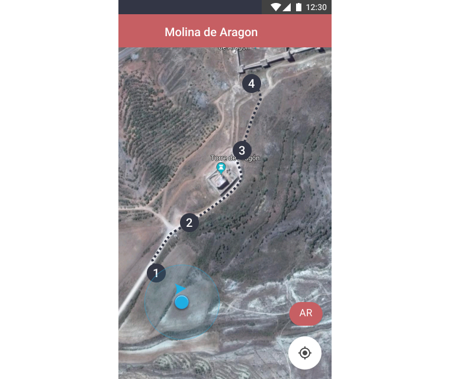
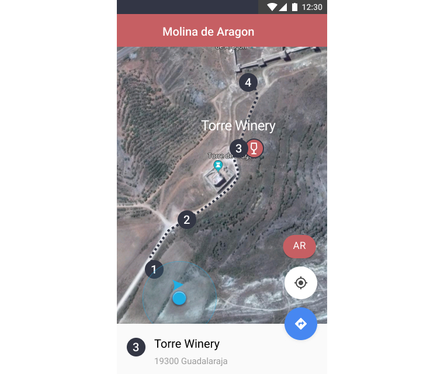
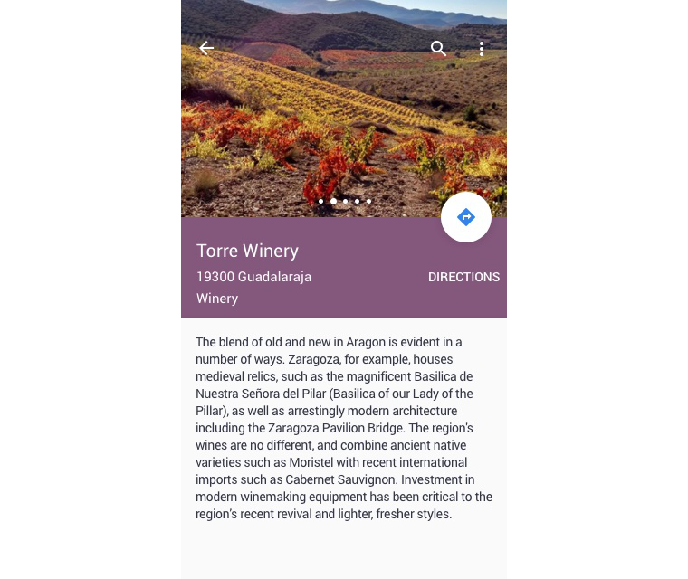
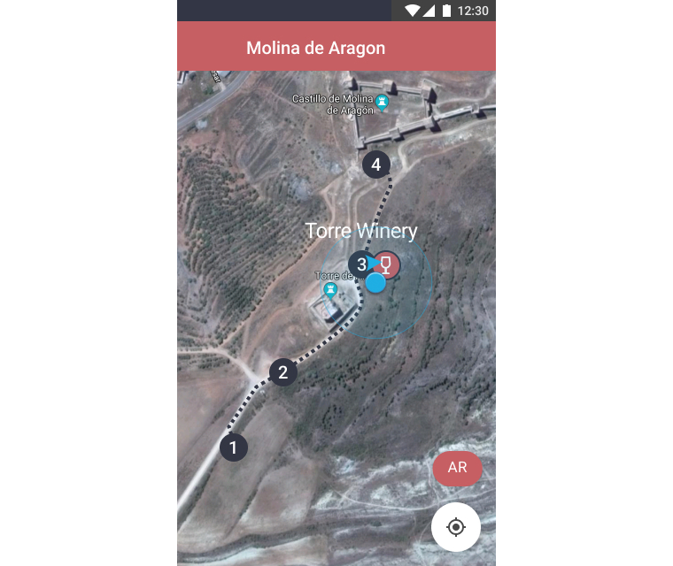
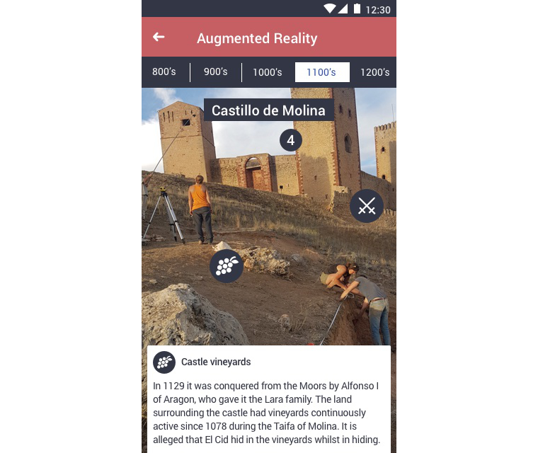
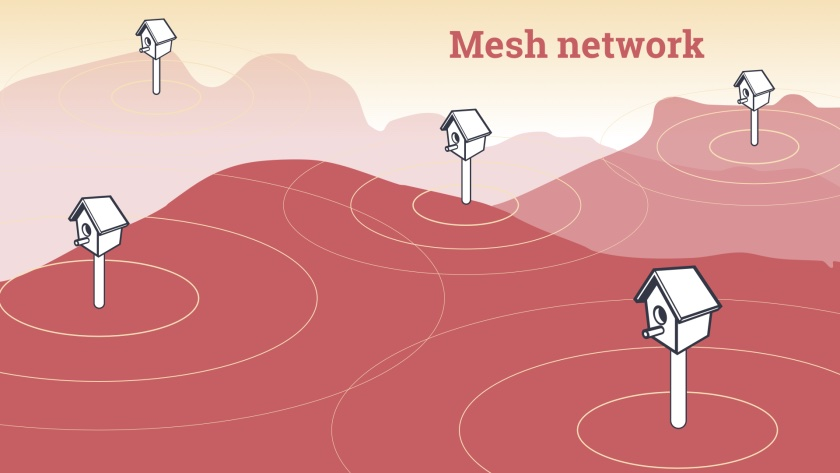

Landscapes of (Re)Conquest

Landscapes of (Re)Conquest is a journey though the history of the Iberian Peninsula from AD 711 to 1492 using Augmented Reality (AR). The visitor will be able to view and interact with an immersive technology timeline showing them what the past looked like during this tumultuous period of transition from Muslim to Christian rule. The experience will show the visitor how life, politics and agriculture worked visually, but will also act as a guide in exploring the local wine and food production which reflect this history.
The interdisciplinary team for Landscapes of (Re)Conquest consists of interaction designers, software developers, archeologists, museum curators, historical content creators and archivists, tour guides and wine experts partnering with regional governments in Spain, France and various university partners.

We’re looking at how to map out the experience for the AR to support the landscape, not dominate it. We want to get you to use the phone for invigorating your imagination, layering on information about the people and places, showing the visitor how life, politics and agriculture worked over time. And also get the user to that glass of wine.

This is what the user first sees when loading up the mobile web app. It is important to the project that the experience is as accessible and easy to use as possible, so there is no platform specificity or downloads necessary.

In order to get started, the viewer needs to choose what they want to experience and where they’re starting from.

The user is then presented with a custom tour path with their interests laid out on the map

They can tap the number 3 Point of Interest (POI) and see the Torre Winery selected.

The user then taps the bottom information panel to learn more.

At this point the viewer has walked to stop 3, the winery, and their location is shown.

From the map view, the viewer has selected AR mode and sees stop 4, the castle, in Augmented Reality and can select (tap) items of interest to learn more about what they’re looking at, in this case viticulture in the landscape.

Eventually we plan that the data of the Landscapes of (Re)Conquest experience will be provided to handset browsers by solar powered birdhouse servers. These will create a local, wifi mesh network providing the visitor with free, redundant content that ties the stories to the land where it took place.
Landscapes of Reconquest is currently funded by The Arts and Humanities Research Council (UK) and awaiting further funding by the EU.
Project partners
University of Reading (UK)
Universidad de Granada (Spain)
University of York (UK)
Université de Perpignan – UPVD (France)
Université de Paris 1 Panthéon-Sorbonne (France)
Université de La Rochelle (France)
Acter Archeologie, Pézilla-la-Rivière (France)
UNESCO Geopark of Molina de Aragón – Alto Tajo (Spain)
Museum of the Order of St. John, London (UK)